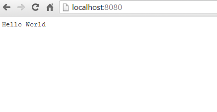

Building a Development Environment using Vagrant + Chef
Overview
We're going to cover...
Why you might want to use Vagrant & Chef
What Vagrant and Chef do
Building a basic NodeJS and Mongo environment using Vagrant & Chef
Going a little deeper into a Chef cookbook.
Why you might want to use Vagrant & Chef
Let's talk about some different environment configuration strategies.
- Configuration by Lead Developer
- Configuration by Central Architecture Team
- Configuration by Ops
- Configuration by Virtual Machine
A Tale of Four Jobs
An embarassing look into my past.
Job The First
Internet Affiliate Marketers/Weight Loss Gurus/Scam Artists
this one weight loss tip has health-care professionals stumped
amputation
Nobody had any idea what exactly was running on the dev and prod servers.
okay, probably PHP and MySQL
Most development was just done by ssh-ing into a dev box and using vim and screen
vim : an elegant tool from a more civilized age
screen : nope, too far, this just means you're crazy
Deployment
Step one: Poke Kyle
Step two: Wait a few hours
Configuration by Lead Developer
All information about project environment stored in one dude.
Pitfalls
Missing Lead Developer
Watch out for buses or vacations
Pain in the Ass
Setting up the environment takes TIME.
Memory Isn't Perfect
The lead developer can't remember exactly how things went.
Job 2: Return of Job
Enormous Faceless Animal-Themed Telecom
All applications use the same libraries and deployment environment.
Java. See also: bureaucracy.
Changes to the application environment required a petition to the Central Architecture team.

Doing Anything at a Telecom
Step one: *
Step two: Wait about six months.
Configuration by Central Architecture Team
hey, that library isn't on the list of Architecture Team approved libraries!
no JSON for you, peon
Job 4
yes, I understand these are not in chronological order, it's in service of a point
Configuration by Ops
The lead devs and ops figured out the configuration they'd use to actually launch the software.
Everybody just developed in Visual Studio, using the built-in development environment
Configuration by Oral Tradition
tales of the correct configuration passed down from generation to generation

getting it to run outside of the protective dev bubble? that's ops' problem.
Job 3
It rhymes with Meviantart
Complex Configuration
sharding! caching! sample data! hand-coded C++ recommendation systems!
my advice for working on a 10-year-old PHP codebase
don't work on a 10-year-old PHP codebase
So they just gave every developer a virtual machine containing the whole shebang.
Configuration By Virtual Machine
have as many different environments as you like without ever worrying about overlap
each one is totally self contained
set up time on a new machine is almost nil
no need to worry about separating environments with tools like npm or rvm or virtualenv
team members can develop in Windows, Linux, or Mac without having a different environment from other team members
hell, you could develop on a toaster if that's what floats your boat
virtual machines: awesome
... until you have to change anything
Get to the point already!
Talking a lot about myself in order to make a point about software
I call it the Joel Spolsky
It would be convenient to be able to keep your entire environment in a virtual machine.
spoiler: that's what Vagrant does
It would be useful to be able to keep your entire environment, in an easily modifiable format, under source control.
spoiler: that's what Chef does
What is Vagrant?
Vagrant is a tool that allows you to, from the command line, create, configure, and manage a virtual machine.

this was their original logo.
What is Chef?

Baby don't hurt me, don't hurt me, no more
Chef is a toolkit for rapidly configuring one or many computers.

this was never their logo
Puppet vs. Chef
The ultimate showdown of ultimate destiny.

they're basically just the Pepsi and Coke of configuration management.
170 calories in every can of Puppet
| Puppet | Chef |
|---|---|
| Client/Server | Client/Server |
| Enterprisey | Ruby-y |
| Config files | Scripts |
| Secretly plan to charge you money | Also yes |
| Domain-specific language | Ruby |
| Good choice | Also a good choice |
So why Chef, then?
because that's the one I picked, that's all
Using Chef with Vagrant

chef-solo is a variant of chef designed for provisioning just one computer
A Sample Project
finally, some code
This entire presentation, including all code samples, is available at
https://github.com/classam/vagrant_presentation
Install
Go install VirtualBox and Vagrant.
Also Git if you haven't installed it already.
but why wouldn't you have git installed?
Start with the obvious bit
We're working in Git Bash (on Windows)
or Terminal (on Mac or Ubuntu)
mkdir example
cd example
Create a Vagrant Project
vagrant initThis creates a Vagrantfile
ls
. .. VagrantfileWhich you should open in the code editor of your choice.
obviously vim
vim VagrantfileHoly shit lookit that
# -*- mode: ruby -*-
# vi: set ft=ruby :
# Vagrantfile API/syntax version. Don't touch unless you know what you're doing!
VAGRANTFILE_API_VERSION = "2"
Vagrant.configure(VAGRANTFILE_API_VERSION) do |config|
# All Vagrant configuration is done here. The most common configuration
# options are documented and commented below. For a complete reference,
# please see the online documentation at vagrantup.com.
# Every Vagrant virtual environment requires a box to build off of.
config.vm.box = "base"
# The url from where the 'config.vm.box' box will be fetched if it
# doesn't already exist on the user's system.
# config.vm.box_url = "http://domain.com/path/to/above.box"
# Create a forwarded port mapping which allows access to a specific port
# within the machine from a port on the host machine. In the example below,
# accessing "localhost:8080" will access port 80 on the guest machine.
# config.vm.network :forwarded_port, guest: 80, host: 8080
# Create a private network, which allows host-only access to the machine
# using a specific IP.
# config.vm.network :private_network, ip: "192.168.33.10"
# Create a public network, which generally matched to bridged network.
# Bridged networks make the machine appear as another physical device on
# your network.
# If true, then any SSH connections made will enable agent forwarding.
# Default value: false
# config.ssh.forward_agent = true
# Share an additional folder to the guest VM. The first argument is
# the path on the host to the actual folder. The second argument is
# the path on the guest to mount the folder. And the optional third
# argument is a set of non-required options.
# config.vm.synced_folder "../data", "/vagrant_data"
# Provider-specific configuration so you can fine-tune various
# backing providers for Vagrant. These expose provider-specific options.
# Example for VirtualBox:
#
# config.vm.provider :virtualbox do |vb|
# # Don't boot with headless mode
# vb.gui = true
#
# # Use VBoxManage to customize the VM. For example to change memory:
# vb.customize ["modifyvm", :id, "--memory", "1024"]
# end
#
# View the documentation for the provider you're using for more
# information on available options.
# Enable provisioning with Puppet stand alone. Puppet manifests
# are contained in a directory path relative to this Vagrantfile.
# You will need to create the manifests directory and a manifest in
# the file base.pp in the manifests_path directory.
#
# An example Puppet manifest to provision the message of the day:
#
# # group { "puppet":
# # ensure => "present",
# # }
# #
# # File { owner => 0, group => 0, mode => 0644 }
# #
# # file { '/etc/motd':
# # content => "Welcome to your Vagrant-built virtual machine!
# # Managed by Puppet.\n"
# # }
#
# config.vm.provision :puppet do |puppet|
# puppet.manifests_path = "manifests"
# puppet.manifest_file = "site.pp"
# end
# Enable provisioning with chef solo, specifying a cookbooks path, roles
# path, and data_bags path (all relative to this Vagrantfile), and adding
# some recipes and/or roles.
#
# config.vm.provision :chef_solo do |chef|
# chef.cookbooks_path = "../my-recipes/cookbooks"
# chef.roles_path = "../my-recipes/roles"
# chef.data_bags_path = "../my-recipes/data_bags"
# chef.add_recipe "mysql"
# chef.add_role "web"
#
# # You may also specify custom JSON attributes:
# chef.json = { :mysql_password => "foo" }
# end
# Enable provisioning with chef server, specifying the chef server URL,
# and the path to the validation key (relative to this Vagrantfile).
#
# The Opscode Platform uses HTTPS. Substitute your organization for
# ORGNAME in the URL and validation key.
#
# If you have your own Chef Server, use the appropriate URL, which may be
# HTTP instead of HTTPS depending on your configuration. Also change the
# validation key to validation.pem.
#
# config.vm.provision :chef_client do |chef|
# chef.chef_server_url = "https://api.opscode.com/organizations/ORGNAME"
# chef.validation_key_path = "ORGNAME-validator.pem"
# end
#
# If you're using the Opscode platform, your validator client is
# ORGNAME-validator, replacing ORGNAME with your organization name.
#
# If you have your own Chef Server, the default validation client name is
# chef-validator, unless you changed the configuration.
#
# chef.validation_client_name = "ORGNAME-validator"
end
It's actually mostly comments
If we were to take all of the comments out of the file, it would look like this:
VAGRANTFILE_API_VERSION = "2"
Vagrant.configure(VAGRANTFILE_API_VERSION) do |config|
config.vm.box = "base"
end
But the comments are helpful, so leave 'em in.
Vagrantfile - Select an OS
What sort of box would you like?
Here's where we select the box we want to load.
# Every Vagrant virtual environment requires a box to build off of.
config.vm.box = "base"
# The url from where the 'config.vm.box' box will be fetched if it
# doesn't already exist on the user's system.
# config.vm.box_url = "http://domain.com/path/to/above.box"
To look at a list of candidate virtual machines, visit:
http://vagrantbox.es

Let's use Ubuntu Precise Pangolin 32-Bit
You'll find it on the list under
http://files.vagrantup.com/precise32.box
Modify the Vagrantfile!
# Every Vagrant virtual environment requires a box to build off of.
config.vm.box = "precise32"
# The url from where the 'config.vm.box' box will be fetched if it
# doesn't already exist on the user's system.
config.vm.box_url = "http://files.vagrantup.com/precise32.box"
Vagrantfile - Open Dev Ports
A little bit of tenderness networking
VM Networking Options
defaults to NAT
- NAT (Network Address Translation)
- Bridged
NAT
it's a NATural fact
Your computer is a router through which the VM connects to the internet.
If you want your VM to have open ports, you need to forward them.
Bridged
Your VM connects to the public network and gets its own IP.
This is really useful for working on distributed systems.
Look at this bit:
# Create a forwarded port mapping which allows access to a specific port
# within the machine from a port on the host machine. In the example below,
# accessing "localhost:8080" will access port 80 on the guest machine.
# config.vm.network :forwarded_port, guest: 80, host: 8080
Let's forward port 8080
config.vm.network :forwarded_port, guest: 8080, host: 8080
Vagrantfile - Syncing a Dev Folder
the VM also needs some code to run.
We don't want to edit code in the VM.
For one thing, it doesn't have a GUI or any of our code tools.
and I'd rather use GVim than vim
Instead, we mount a local code folder to the VM.
# Share an additional folder to the guest VM. The first argument is
# the path on the host to the actual folder. The second argument is
# the path on the guest to mount the folder. And the optional third
# argument is a set of non-required options.
# config.vm.synced_folder "../data", "/vagrant_data"
... like this:
config.vm.synced_folder ".", "/home/vagrant/synced"
which mounts the directory we're running the Vagrantfile from to /home/vagrant/synced
Chef - Installing Mongo and Node
Manufacture a chef directory
mkdir chef
mkdir chef/cookbooks
mkdir chef/roles
mkdir chef/data_bags
Add those locations to the Vagrantfile
# Enable provisioning with chef solo, specifying a cookbooks path, roles
# path, and data_bags path (all relative to this Vagrantfile), and adding
# some recipes and/or roles.
#
# config.vm.provision :chef_solo do |chef|
# chef.cookbooks_path = "../my-recipes/cookbooks"
# chef.roles_path = "../my-recipes/roles"
# chef.data_bags_path = "../my-recipes/data_bags"
# chef.add_recipe "mysql"
# chef.add_role "web"
#
# # You may also specify custom JSON attributes:
# chef.json = { :mysql_password => "foo" }
# end
# Enable provisioning with chef solo, specifying a cookbooks path, roles
# path, and data_bags path (all relative to this Vagrantfile), and adding
# some recipes and/or roles.
#
config.vm.provision :chef_solo do |chef|
chef.cookbooks_path = "chef/cookbooks"
chef.roles_path = "chef/roles"
chef.data_bags_path = "chef/data_bags"
end
What are we installing?
We'll need to download some cookbooks.
- MongoDB - https://github.com/edelight/chef-mongodb
- NodeJS - https://github.com/mdxp/nodejs-cookbook
reading the documentation for these cookbooks, each one has a dependency on another cookbook.
MongoDB requires the apt cookbook
NodeJS requires the build-essential cookbook
so we download all four of these libraries and then place them in our chef/cookbooks directory
- MongoDB - https://github.com/edelight/chef-mongodb
- NodeJS - https://github.com/mdxp/nodejs-cookbook
- apt - https://github.com/opscode-cookbooks/apt
- build-essential - http://github.com/opscode-cookbooks/build-essential
Back to the Vagrantfile
and we use the add_recipe directive to add the MongoDB and NodeJS recipes.
config.vm.provision :chef_solo do |chef|
chef.cookbooks_path = "chef/cookbooks"
chef.roles_path = "chef/roles"
chef.data_bags_path = "chef/data_bags"
chef.add_recipe "mongodb::default"
chef.add_recipe "nodejs"
chef.add_recipe "nodejs::npm"
end
The Moment of Truth
Let's boot up this Virtual Machine.
At the command line:
vagrant up
Bringing machine 'default' up with 'virtualbox' provider...
[default] Importing base box 'precise32'...
[default] Matching MAC address for NAT networking...
[default] Setting the name of the VM...
[default] Clearing any previously set forwarded ports...
[default] Creating shared folders metadata...
[default] Clearing any previously set network interfaces...
[default] Preparing network interfaces based on configuration...
[default] Forwarding ports...
[default] -- 22 => 2222 (adapter 1)
[default] -- 8080 => 8080 (adapter 1)
[default] Booting VM...
It's alive!
Wait, no, it's not.
What the shit is this?
[2013-10-25T23:34:09+00:00] Fatal: Chef::Exceptions::Package package[mongodb-10gen]
(mongodb::default line 22) had an error: Chef::Exceptions::Package:No version specified,
and no candidate version available for mongodb-10gen
Chef never successfully completed!
Any errors should be visible in the output above.
Please fix your recipes so that they properly complete.
Inevitable Debugging
sigh

configuration is hard, and Chef recipes have a tendency to.. uh.. fail.
in this case, the recipe is looking for a package named mongodb-10gen, but looking around in the Ubuntu repo, no such package exists.
there is a mongodb package. Let's try that.
Modify The Recipe
/code/cookbooks/mongodb/attributes/default.rb line 83
default[:mongodb][:package_name] = "mongodb"
Re-run Chef
vagrant provision
it finishes this time
[2013-10-28T20:46:31+00:00] INFO: Chef Run complete in 406.279946 seconds
[2013-10-28T20:46:31+00:00] INFO: Running report handlers
[2013-10-28T20:46:31+00:00] INFO: Report handlers complete
It's alive again!
Start Developing!
Create a node.js application.
Hello World
vim hello_world.js
Let's just steal one.
This one's the node.js sample application:
var http = require('http');
http.createServer(function (req, res) {
res.writeHead(200, {'Content-Type': 'text/plain'});
res.end('Hello World\n');
}).listen(8080, '0.0.0.0');
console.log('Server running at http://127.0.0.1:8080/');
but we've changed it to listen on 0.0.0.0 and port 8080
Log in to the VM
To run our app, we need to ssh in to our running VM.
vagrant ssh
Welcome to Ubuntu 12.04 LTS (GNU/Linux 3.2.0-23-generic-pae i686)
* Documentation: http://help.ubuntu.com
159 packages can be updated
73 packages are security updates
Welcome to your Vagrant-built virtual machine.
Last login: Fri Sep 14 06:22:31 2012 from 10.0.2.2
vagrant@precise32:~$
We can run our app from here.
cd synced
node hello_world.js
There we go.
We can also connect to the Mongo DB we just created.
mongo
Okay, that's enough of that.
Let's exit.
exit
and turn off the server, while we're at it.
vagrant halt
Custom Cookbooks
Installing your own apps.
I think I'm running out of time, so the super short version:
Cookbooks contain:
- Recipes
- Attributes
- Templates
- Files
- Resources
- Providers
- Metadata
Recipes
The most important part, the actual script that runs.
A super simple flask cookbook
if we create chef/cookbooks/flask/recipes/default.rb
and fill it with:
package "python-pip"
execute "pip install flask" do
command "pip install flask"
user "root"
end
we've created a cookbook that will install the "flask" python library
Attributes are overridable default configuration parameters.
For example, "which version of mongodb to install"
Templates are .erb templates.
(usually of configuration files)
Files are just... important files.
Recipes can provide Resources to other recipes, using Providers
Recipes also provide Metadata about themselves
Things like 'author', 'title', 'version', and the like.
A Loose End
What are the chef/roles and chef/data_bags folders for?
A Role is a list of recipes to run.
A Data-Bag is a database of configuration variables.